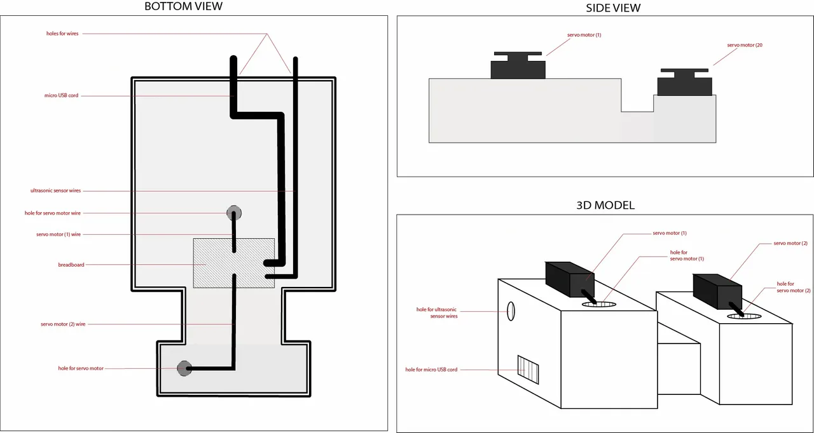

Final Design of Taking Candy From A Baby Project
I worked on this project with the amazing Julia Fernandez.
You can find her website here!
The initial plan included LEDs behind the eyes, a servo motor
spinning the baby’s head, and a recording of a baby crying when an
unsuspecting trick-or-treater stuck their hand in the bowl. We
would fix an ultrasonic sensor to the inside of the bowl to detect
a hand. We considered fixing the head upright or sliced in half
and fixed like a mask on the bottom of the bowl.
As we began to map this out, it became apparent that sawing the
baby head in half was not very practical or a good use of our
time. Additionally, the eyes of the baby seemed to be impossible
to remove; they were embedded in a thick layer of plastic. Upon
those discoveries, Aidan and I decided it would be best to ditch
the LEDs in the head and try animating another part of the baby
in place of it. A third a final sketch was drafted.
In this sketch, we designed a platform for the servo motors to
be mounted on. The baby’s head and arm would be mounted on the
servo motor, and all of the wiring would be hidden underneath
the platform. A more complete blueprint of the structure of the
platform is seen in this blueprint:

Blueprint of Arduino Wiring in the Bowl
As can be seen in the code above, we declared two separate servo
motors: one for the baby’s head and one for the baby’s hand.
After ensuring that both servo motor’s functioned properly, we
moved onto connecting them to the ultrasonic sensor. Though
the sensor could detect the full length of the room at 401
inches, we set the range for 4 inches. At this point, we were
confronted with a problem.
Problem: The ultrasonic sensor kept mistaking the moving baby
extremities for human movement reaching into the bowl. The
amount of space in the bowl was just too tight for the sensor
to be able to detect the single motion of a hand moving in
front of it. We also realized that if the trick-or-treater
stuck there hand in the bowl at any other position aside from
where the sensor was aimed, there would be no special effect,
defeating the purpose of the sensor in the first place.
Solution: We decided that we should point the ultrasonic sensor
outside of the front of the bowl to detect when a person is
standing in front of it, close enough to reach for candy.
Though this isn’t what we wanted ideally, there seemed to be
no other option. We remapped the range of the ultrasonic sensor
to 20 inches, a distance we decided on after pretending to reach
for candy and measuring how close the average person stood when
reaching. Below is a timelapse of the project setup.
Timelapse of Bowl Setup
Though this project involves literally taking candy from a
baby, making it was not like taking candy from a baby. We were
faced with a number of obstacles including: The baby’s head being
too heavy for the motor, the unreliability of the ultrasonic sensor
mapping the ultrasonic sensor, and fitting all of the baby parts
in the bucket.
Despite these challenges, we are pleased with our final product.
We’ve learned a lot about computation this semester, and it was
really exciting to be able to use our new skills in combination
with some creativity to make something! In our project we
revisited topics discussed in class. These topics were: Serial
communication (we used this to connect sound with the ultrasonic
sensor), analog input and output (the ultrasonic sensor (I) and
servo motors (O)), and the p5.js sound library (the audio of
the crying baby).
Special thanks to DanO for giving us the ultrasonic sensor, Arnab
for helping us work out the code for the audio, and David for
also helping us with code and playing lots of stress-relieving
ping pong games in between work.
Below is a video of the final product in use.
Final Product in Use